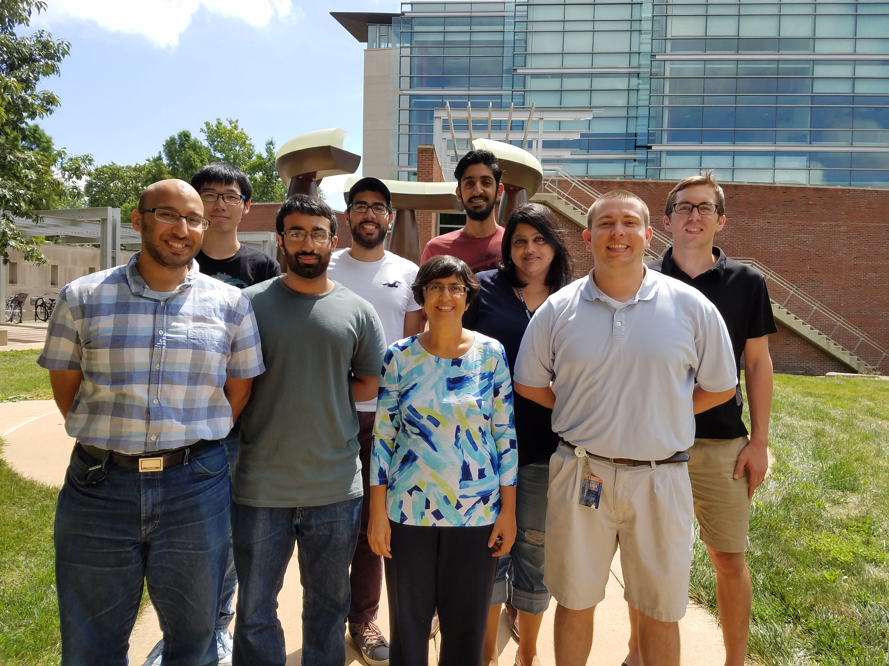

| Sarita Adve's Research Group |  |
|---|---|
| University of Illinois at Urbana-Champaign |
NEWS
|
ABOUT THE GROUPOur group's research focus is in computer architecture, but we take a full system view of the problems we solve and collaborate closely with faculty and students from other areas, including applications, software, and hardware. The looming end of transistor scaling (Moore's law) poses a major disruption to the field of computing. Computer architects can enable sustaining the performance predictions of Moore's law through system design innovations that span the hardware-software boundary. Our group is exploring specialization and approximation to build hardware and software systems that will enable new applications in AI, augmented reality, and other emerging domains: Scalable Specialization  We are very proud that for three of the last five years (2014-18), a PhD thesis from our group has been selected as one of the Illinois CS department's two nominations for the ACM doctoral dissertation award. Matt Sinclair for 2018 : Hyojin Sung for 2016 : Siva Sastry Hari for 2014 : OTHER PAST IMPACT
|
{kind=link}